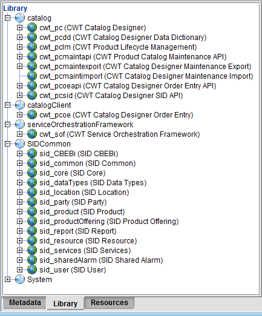

Product Lifecycle Designer - Velocity Studio ConfigurationTo configure Product Lifecycle Designer (PLD), you must do the following:
Add PLD Library FileThe PLD library file, serviceOrchestrationFramework.jar, contains the metadata that enables PLD to run. This file must be added to Velocity Studio's library. Here are the steps to complete this process:
Note: For more information, see Add Library files. Once all the library files have been successfully added, the Library folder contains all the files.  |